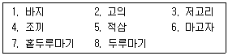
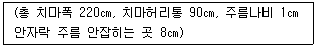
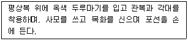

한복기능사 (2004-04-04 기출문제)
1과목: 임의 구분
1. 다음 보기 중 여름철 남자 평상복으로만 이루어진 것은?

- 1, 3, 4, 6
- 2, 4, 8
- 2, 5, 7, 8
- 1, 5, 8
(정답률: 알수없음)

2. 여름철 한복의 재료로 주로 사용되는 옷감은?
- 모시,부사견,관사
- 자미사,명주,뉴똥
- 공단,법단,뉴똥
- 모시,항라,생고사
(정답률: 알수없음)
3. 깨끼 저고리를 만드는데 가장 적당한 직물은?
- 양단
- 무명
- 항라
- 옥양목
(정답률: 알수없음)
4. 흡습성이 적은 섬유의 특징이 아닌 것은?
- 염색이 잘 된다.
- 세탁 후 건조가 빠르다.
- 구김살이 잘 생기지 않는다.
- 표면에 정전기가 발생한다.
(정답률: 알수없음)
5. 다음 직물 중 3대 합성직물이 아닌 것은?
- 나일론
- 스판덱스
- 폴리에스테르
- 아크릴
(정답률: 알수없음)
6. 합성직물의 특성에 해당하는 것은?
- 강도가 약하고, 잘 구겨지며 열에 약함
- 강도가 강하고, 세탁이 쉬우며, 잘 구겨지지 않음
- 촉감이 부드럽고 잘 구겨지지 않으며, 보온력이 강함
- 강력이 강하고, 흡습성이 좋으며, 쉽게 구겨짐
(정답률: 알수없음)
7. 다음 섬유 중 반 합성섬유는?
- 아세테이트 섬유
- 알긴산 섬유
- 비스코스레이온 섬유
- 동암모니아레이온 섬유
(정답률: 알수없음)
8. 식물성 섬유중에서 강도가 가장 큰 섬유는?
- 저마
- 대마
- 견
- 면
(정답률: 알수없음)
9. 다음 중 재생모가 아닌 것은?
- 쇼디 (shoddy)
- 멍고우 (mungo)
- 익스트랙트 (extract)
- 플리스(fleece)
(정답률: 알수없음)
10. 생사가 정련견에 비해 촉감이 거칠고 강경한 이유는 무엇 때문인가?
- 세리신
- 피브로인
- 외표피층
- 토사구
(정답률: 알수없음)
11. 전통복식(한복) 중에서 고유의복의 전통을 가장 많이 유지하고 있는 의복은?
- 조끼
- 마고자
- 배자
- 바지
(정답률: 알수없음)
12. 다음 중 전통적(재래식) 남자 한복의 색은?
- 흰색바지와 옥색저고리
- 보라색바지 저고리
- 옥색바지 저고리
- 미색바지 저고리
(정답률: 37%)
13. 다음 중 한복의 미적 측면에서 완전한 질서에 의한 안정성이 나타나는 좌우상칭균형(Formal balance)에 속하지 않는 것은?
- 조끼
- 저고리
- 마고자
- 전복
(정답률: 알수없음)
14. 색동저고리나 무지기치마가 주는 형태상의 특징은 디자인의 원리 중 어디에 속하는가?
- 점진적인 강조
- 점진적인 균형
- 균일한 리듬
- 불규칙적인 비례
(정답률: 알수없음)
15. 여자 의복에서 전통적인 배색으로 옳은 것은?
- 노랑색 치마, 남색 저고리, 자주색 회장
- 옥색 치마, 흰 저고리, 옥색 두루마기
- 초록색 저고리, 연두색 치마, 자주색 회장
- 옥색 치마, 연두색 저고리, 자주색 회장
(정답률: 알수없음)
16. 다음 중 키를 커 보이게 하는 디자인 방법이 아닌 것은?
- 하이웨이스트로 입는다.
- 벨트를 매지 않는다.
- 옷의 길이는 길지 않게 한다.
- 강한 수직선으로 분할한다.
(정답률: 알수없음)
17. 녹의홍상, 황의홍상,녹의청상의 배색은?
- 보색의 조화
- 유사색의 조화
- 다색의 조화
- 난색과 한색의 조화
(정답률: 알수없음)
18. 한복 저고리의 구성면으로 본 특색이 아닌 것은?
- 한복저고리는 입체구성형이다.
- 한복은 평면구성으로 이루어져서 입어야 비로소 입체감이 형성되어 우아함을 느끼게 한다.
- 한복은 평면구성형으로 남방열대형은 아니다.
- 뒤품에 비해 여유분이 요구되는 앞품을 해결해 주기 위해 섶을 단다.
(정답률: 알수없음)
19. 비대칭 균형에 대한 설명이 아닌 것은?
- 좌우를 동일하게 하여 이루는 균형보다 훨씬 부드럽고 율동감이 있다.
- 비대칭 균형은 다소는 딱딱한 느낌을 줄 수 있다.
- 비대칭 균형은 성숙감과 세련미를 느끼게 한다.
- 신체적 결함을 커버할 수 있고 보완의 기능도 있다.
(정답률: 알수없음)
20. 검정색과의 조화에 어색한 것은?
- 검정색은 순례자나 수녀의 의상이다.
- 여성의 곡선미에 명암을 드리워준다.
- 사소한 결함을 가려주기도 한다.
- 흑색은 유채색이라 백색과 전혀 다른 성격이다.
(정답률: 알수없음)
2과목: 임의 구분
21. 남자바지의 원형제도에서 바지통은 일반적으로 부리치수의 몇배인가?
- 4배
- 3.5배
- 3배
- 2배
(정답률: 알수없음)
22. 성인남자 저고리의 표준치수에서 깃너비는 일반적으로 어느 정도인가?
- 약 5㎝
- 약 6㎝
- 약 7.5㎝
- 약 8.5㎝
(정답률: 알수없음)
23. 일반적으로 한복을 개량하여 평상복으로 만드는 방법 중 가장 알맞은 것은?
- 소매배래를 넓게 한다.
- 저고리의 길이를 길게 한다.
- 치마길이를 길게 한다.
- 고름을 길게 한다.
(정답률: 34%)
24. 삼합(三合)무지기란 무엇인가?
- 모시로 3층 단을 만든 속치마
- 치마 단에 창호지를 붙인 속치마
- 치마 폭수가 3배로 합친 치마
- 치마 단에 색단을 대어 배색이 잘 되게한 치마
(정답률: 알수없음)
25. 저고리 제작 시 섶솔기 다림질 방법이 맞는 것은?
- 겉섶은 섶쪽으로 안섶은 길쪽으로 시접을 꺾어 다린다.
- 겉섶은 길쪽으로 안섶은 섶쪽으로 시접을 꺾어 다린다.
- 겉섶, 안섶 모두 섶쪽으로 시접을 꺾어 다린다.
- 겉섶, 안섶 모두 길쪽으로 시접을 꺾어 다린다.
(정답률: 알수없음)
26. 바지 대님의 적당한 길이와 나비는?
- 길이 75 - 80㎝, 나비 3.5㎝
- 길이 45 - 50㎝, 나비 3㎝
- 길이 75 - 80㎝, 나비 1.5㎝
- 길이 45 - 50㎝, 나비 4.5㎝
(정답률: 알수없음)
27. 보기와 같은 경우 주름 1개의 전체나비와 속주름의 분량은 얼마정도인가?

- 주름 1개의 전체나비 약 2㎝ 속주름분 약 1㎝
- 주름 1개의 전체나비 약 2.6㎝ 속주름분 약 1.6㎝
- 주름 1개의 전체나비 약 3㎝ 속주름분 약 2㎝
- 주름 1개의 전체나비 약 3.6㎝ 속주름분 약 2.6㎝
(정답률: 알수없음)
28. 새발뜨기는 한복에서 일반적으로 어떤 경우에 많이 사용 하는가?
- 안감이 밀려 나오지 않게 하기 위해 사용한다.
- 등솔에 사용하는 장식 바느질법이다.
- 단을 공그리기할 때 사용한다.
- 어린이 옷의 섶코에 사용한다.
(정답률: 알수없음)
29. 곱솔로 바느질 해야 하는 옷끼리 묶여진 것은?
- 박이저고리, 적삼
- 깨끼저고리, 적삼
- 깨끼저고리, 버선
- 물겹저고리, 고의
(정답률: 알수없음)
30. 치마 제작법 중 옳지 않은 것은?
- 치마폭을 이을때는 안팎과 무늬를 맞추고 아래에서 위쪽으로 박고 시접은 주름잡은 방향으로 꺾는다.
- 치마폭 솔기는 두꺼운 감일때에는 가름솔, 얇은 감일때에는 곱솔로 한다.
- 허리를 달 때 치마자락이 늘어지지 않게 하기 위하여 안자락은 2㎝, 겉자락은 1㎝ 깊게 넣고 겉자락에서 안자락으로 바느질을 한다.
- 치마 주름의 수는 총 치마폭너비 ÷ 겉주름 나비이다
(정답률: 알수없음)
31. 재봉틀을 사용할 때 윗실이 자주 끊기는 이유 중 가장 옳은 것은?
- 실걸기가 잘못 되었을 때
- 북에 실이 올바르게 감겼을 때
- 천에 풀기가 많을 때
- 천이 바늘보다 두꺼울 때
(정답률: 알수없음)
32. 다음에서 명칭과 기능이 옳은 것은? (단, 미싱의 명칭과 그 기능)
- 바늘 땀의 조절은 노루발이 한다.
- 옷감의 두께는 압력 조절장치로 조절한다.
- 땀수 조절은 압력 조절장치가 한다.
- 바늘의 납작한 면이 재봉틀의 바깥쪽으로 오게 한다.
(정답률: 알수없음)
33. 옥양목 바지 저고리를 제작하는데 면사 60수를 사용시 1㎝속의 땀수는 얼마정도가 적당한가?
- 5 ~ 6
- 3 ~ 4
- 8 ~ 9
- 2 ~ 4
(정답률: 알수없음)
34. 노방 치마 저고리를 재봉할 때 알맞는 실과 바늘의 호수가 바르게 연결된 것은 ?
- 견사 21D/4× 3, 바늘 - 9호
- 견사 30D/4× 3, 바늘 - 13호
- 면사 80번수, 바늘 - 9호
- 합성사 50D/3, 바늘 - 11호
(정답률: 알수없음)
35. 인견(人絹)섬유의 올바른 다림질 방법은?
- 얼룩이 지기 쉬우므로 물을 뿌려 빨리 다린다.
- 수축할 우려가 있으므로 낮은 온도(30-40℃)에서 빨리 다린다.
- 물기없이 마른대로 다림질을 한다.
- 120℃-150℃의 다리미 온도로 물을 뿌려가며 다린다.
(정답률: 알수없음)
36. 한복의 세탁법에서 차아지 법이란?
- 오염을 물빨래로 용해 제거하는 법
- 친수성 오염만 제거되는 건식 세탁법
- 친유성 오염만 용해 제거되는 건식 세탁법
- 친수성,친유성 오염을 함께 제거하는 건식 세탁법
(정답률: 20%)
37. 비누나 알칼리성 합성세제로 세탁하는 것이 효과적인 섬유로만 묶인 것은?
- 면, 견
- 견, 트리아세테이트
- 모, 나일론
- 폴리에스테르, 아마
(정답률: 알수없음)
38. 다음 중 얼룩빼기에 있어서 주의할 점이 아닌 것은?
- 오염을 발견하면 즉시 처리해야 하며 시일이 경과하면 곤란하다.
- 섬유의 종류, 염색물의 성질, 얼룩의 종류와 정도를 고려하여야 한다.
- 얼룩빼기 전에 일부 예비실험을 한후에 실시 하여야 한다.
- 표면을 빡빡 문질러 그 부분을 중점적으로 닦아내야 한다.
(정답률: 알수없음)
39. 한복에 묻은 얼룩 중 수용성 얼룩에 해당되지 아니하는 것은?
- 화장품
- 배설물
- 아이스크림
- 소오스
(정답률: 알수없음)
40. 풀에 관한 설명 중 옳지 않은 것은?
- 전분풀 - 80℃ 이상 가열하여 면에 사용한다.
- 젤라틴 - 견직물에 사용한다.
- C.M.C - 섬유소가 주원료이다.
- P.V.A - C.M.C보다 점성이 좋고, 면에 사용한다.
(정답률: 알수없음)
3과목: 임의 구분
41. 남자 한복바지를 보관할 때 개키는 방법으로 옳지 않는 것은?
- 바지는 두 가랑이를 밑위선을 꺾어 포개 놓는다.
- 바지밑 아래의 반을 접는다.
- 바지 밑위를 반을 마주접어 중심으로 포개어 개킨다.
- 두 가랑이를 바지 밑위선을 꺾어 포갠 후 3/4로 접는다.
(정답률: 알수없음)
42. 곰팡이가 섬유제품에 미치는 영향에 대하여 틀린 것은?
- 전분질의 풀이 있는 면포에 곰팡이가 생기면 면포의 무게는 감소되고 착색이 된다.
- 견에 곰팡이가 생기면 면포에 비하여 무게의 감소가 작고 착색의 정도도 작다.
- 곰팡이로 인한 견사의 강도와 신도의 저하는 크다.
- 연사에 비하여 생사는 한층 더 심하게 손상을 받는다.
(정답률: 알수없음)
43. 삼회장 저고리에서 회장감으로 재단되는 부분은?
- 깃, 끝동, 곁마기
- 깃, 고름, 끝동, 곁마기
- 고름, 끝동, 깃
- 깃, 고름
(정답률: 알수없음)
44. 다음 중 그늘에서 건조시켜야 할 것은?
- 실크 치마
- 면 생활한복
- 레이온 속치마
- 삼베 적삼
(정답률: 알수없음)
45. 여자 저고리의 진동치수로 맞는 것은?
- 가슴둘레/4 + 1.5cm
- 가슴둘레/4
- 등길이 – 15
- 가슴둘레/4 - 2
(정답률: 31%)
46. 여자속치마의 일종으로 하체를 크게 과장하여 입었던 것으로 고려시대와 조선시대에 착용되었던 것은?
- 고려-스란 치마, 조선 - 선군
- 고려-선군, 조선 - 무지기 치마
- 고려-무지기 치마, 조선 - 스란 치마
- 고려-스란 치마, 조선 - 무지기 치마
(정답률: 20%)
47. 조선왕조 시대의 왕, 왕세자복 및 백관복에서 볼 수 있는 흉배는 다음 중 어느 옷에 사용 하였는가?
- 상복(裳服)
- 공복(公服)
- 제복(祭服)
- 조복(朝服)
(정답률: 알수없음)
48. 다음의 복장은 어떤 행사에 착용하는 복사인가?

- 상례복
- 소례복
- 혼례복
- 대례복
(정답률: 알수없음)
49. 노리개는 계절에 따라서 패용하는 것이 다른데 가을, 겨울에 패용하는 것은?
- 옥장도(玉粧刀)노리개
- 산호(珊瑚)노리개
- 금,은(金,銀)노리개
- 3작(三作)노리개
(정답률: 알수없음)
50. 삼작 노리개란 무엇인가?
- 노리개의 한 종류이다.
- 노리개 3개가 한조(set)를 이룬 것을 말한다.
- 노리개 1개를 말한다.
- 노리개 2개를 말한다.
(정답률: 알수없음)
51. 남자옷의 일습은 어떤 것인가?
- 바지 + 저고리
- 바지 + 저고리 + 조끼
- 바지 + 저고리 + 마고자
- 바지 + 저고리 + 조끼 + 마고자 + 두루마기
(정답률: 알수없음)
52. 남자아이의 돌이나 명절에 입혀지는 옷이 아닌 것은?
- 까치두루마기
- 풍차바지
- 관복
- 전복
(정답률: 알수없음)
53. 다음 중 두루치에 대한 설명은?
- 회장저고리의 다른 명칭
- 폭이 좁고 짧은 치마
- 속바지의 일종
- 폭이 넓고 짧은 치마
(정답률: 알수없음)
54. "설문에 경의(脛衣)라 하고, 석명에 두다리 가랭이가 각각 걸터앉게 나누어져 있는 것이다." 이것은 무엇을 지칭하는 말인가?
- 포(袍)
- 상(裳)
- 고(袴)
- 대(帶)
(정답률: 34%)
55. 조선시대 백관복 중 상복과 공복을 구별 짓는 특징적인 것은?
- 흉배
- 어대
- 대
- 장문
(정답률: 알수없음)
56. 체형에 따른 한복 색감의 선택이 가장 바르게 된 것은?
- 뚱뚱한 사람-황색, 마른 사람-청색
- 뚱뚱한 사람-녹색, 마른 사람-황색
- 뚱뚱한 사람-황색, 마른 사람-분홍색
- 뚱뚱한 사람-청색, 마른 사람-녹색
(정답률: 알수없음)
57. 조선시대 백관이 상복에 착용하였던 관모는?
- 복두
- 양관
- 익선관
- 사모
(정답률: 알수없음)
58. 홍색의 길에 화려한 무늬의 수를 놓은 옷으로, 조선시대 상류 계층의 예복으로 쓰였던 것은?
- 활옷
- 당의
- 원삼
- 장삼
(정답률: 알수없음)
59. 고구려 복식의 설명 중 틀린 것은?
- 왕은 오채복(五采服)을 착용하였다.
- 저고리의 길이는 둔부선까지 내려오는 긴 것이었다.
- 여자는 바지를 입지 않았다.
- 저고리의 깃, 도련, 수구에는 선이 둘러져 있었다.
(정답률: 알수없음)
60. 개화기 이후 여자 속옷에 나타나는 변화를 잘못 설명한 것은?
- 속치마는 개화기에 생긴 속옷이다.
- 속적삼 대신 셔츠를 입기도 하였다.
- 다리속곳, 속속곳, 단속곳, 너른바지 등 종래의 속옷이 많이 사라졌지만 바지는 오늘날까지 남아있다.
- 속치마를 대신하여 무지기 치마를 착용하였다.
(정답률: 알수없음)